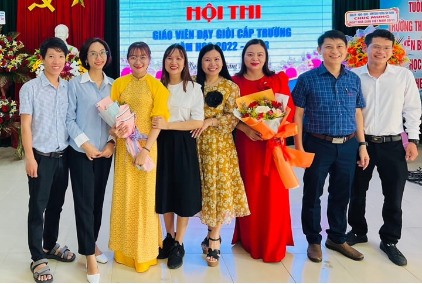
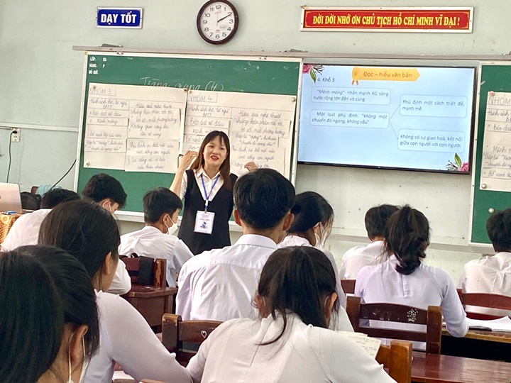

CHI ĐOÀN GIÁO VIÊN VỚI HỘI THI GIÁO VIÊN GIỎI (19/11/2022)

Lần cập nhật cuối lúc Chủ nhật, 04 Tháng 6 2023 20:20 Viết bởi Administrator Thứ bảy, 19 Tháng 11 2022 19:16
CHI ĐOÀN GIÁO VIÊN VỚI HỘI THI GIÁO VIÊN GIỎI (19/11/2022)
Phong trào dạy tốt – học tốt luôn là mục tiêu hàng đầu trong giáo dục. Nhà trường kết hợp cùng Chi đoàn GV tổ chức Hội thi Giáo viên dạy giỏi cấp trường, và chọn ra GV dự thi cấp tỉnh.
Năm học 2022-2023, Chi đoàn GV tham gia 7 đồng chí: Mai Thị Lệ Huyền – Địa Lí, Trịnh Thị Hồng Linh – Ngữ văn, Đỗ Linh Thắng – Vật lí, Đỗ Nguyễn Tường Linh – Tiếng Anh, Dương Văn Hậu – Lịch sử, Bùi Ngọc Bích Thủy – GDKTPL, Phạm Thị Ái Vân – Lịch sử.
Sau các phần thao giảng, các giáo viên đã có những báo cáo sáng kiến trong việc dạy và học áp dụng cho chương trình mới 2018.

BGH chúc mừng các Giáo viên hoàn thành phần thi

- 10/01/2023 19:47 - CHƯƠNG TRÌNH “TUYÊN TRUYỀN PHÁP LUẬT” VỀ MA TUÝ VÀ…
- 09/01/2023 17:31 - CLB Từ Thiện NBK – chiến dịch tình nguyện Xuân
- 22/12/2022 20:30 - HỘI THI RUNG CHUÔNG VÀNG KỈ NIỆM NGÀY THÀNH LẬP QU…
- 14/12/2022 22:53 - CHỦ NHẬT XANH
- 26/11/2022 20:17 - KẾT NỐI CÁC TRƯỜNG ĐẠI HỌC NƯỚC NGOÀI – CƠ HỘI DU …
- 29/10/2022 20:10 - ĐẠI HỘI ĐOÀN TRƯỜNG THPT CHUYÊN NGUYỄN BỈNH KHIÊM …
- 10/09/2022 19:42 - KHÔNG GIAN ĐỌC – SÁCH VỚI ĐOÀN VIÊN THANH NIÊN (10…
- 06/09/2022 22:53 - HỘI TRẠI KHÁT VỌNG NGUYỄN BỈNH KHIÊM - CHÀO MỪNG K…
- 09/06/2022 07:30 - Link bài hát trên Cổng thông tin Trung ương Đoàn T…
- 31/05/2022 09:41 - Đoàn trường tổ chức khen thưởng học sinh 3 tốt cấp…